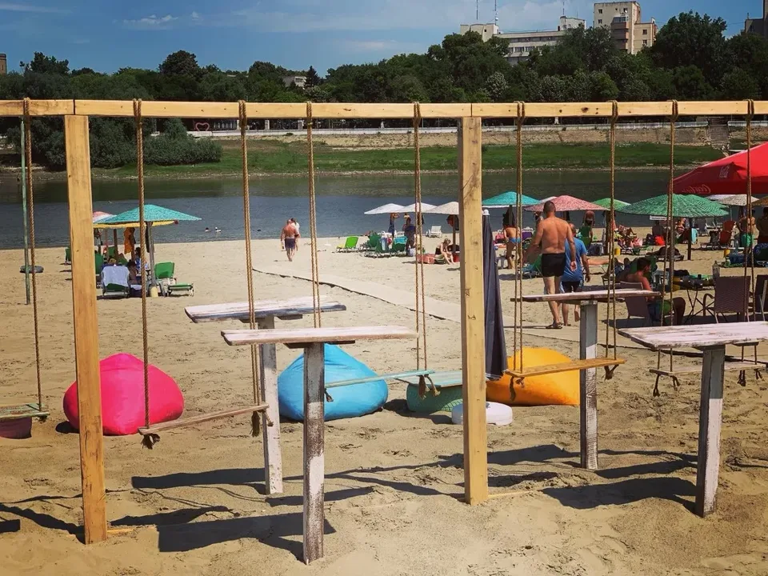

Samskara Beach
Căsuțele de la Samskara Beach și nisipul fin sunt cele două lucruri pe care le reține un oaspete din sejurul său. Pentru o întâlnire de familie, plaja ar putea fi atractivă pentru fotografii, dar merită văzut pe unde ajung efectiv la nisip invitații în pantofi de ocazie. Cere punctul de sosire pentru cei cazați și pe cel pentru vizitatorii de o zi. Dacă diferă, explică-le separat în invitație, înainte să stabilești ora întâlnirii tuturor pe plajă.
4,4 180 recenzii GoogleVreau organizare completă →
Despre Samskara Beach
Samskara Beach (județul Călărași) oferă un loc de joacă și cazare.
La Samskara Beach, operatorul descrie două terase în aer liber, un bar principal, un bar pe plajă și o zonă pentru grătar. Bucătăria comună din exterior este destinată celor cazați care doresc să își prepare singuri mâncarea. Dacă vreți o cină pentru familie, spuneți dacă vă gândiți la gătitul în comun sau la servire organizată în dreptul unuia dintre baruri. Gazdele pot confirma separat accesul invitaților de zi.
Pentru copii există și loc de joacă, iar tarifele de acces la plajă diferențiază copiii însoțiți care nu folosesc șezlong. Nu confundați un tarif de intrare cu rezervarea terasei ori a plajei pentru petrecere. La vizionare stabiliți în ce zonă ar avea loc jurămintele și dacă traseul până la masă trece prin locurile folosite de ceilalți vizitatori.
Date practice
| Spații descrise de operator | loc de joacă Sursă |
|---|---|
| Dotări în profilul Google | Parcare gratuită · Wi-Fi gratuit Sursă |
| Distribuția evaluărilor Google la documentare | 5 ★ (123) · 4 ★ (30) · 3 ★ (16) · 2 ★ (4) · 1 ★ (7) Sursă |
| Cazare în apropiere | Calarasi, Călărași · 298 de locuri de dormit · 0,4 km în linie dreaptă Sursă |
| Cazare în apropiere | Hestia, Călărași · 94 de locuri de dormit · 0,7 km în linie dreaptă Sursă |
Încap toți dragii voștri?
Capacitate și spații
- Cununie în aer liber
- De confirmat
- Cină cu ring de dans
- De confirmat
- Spațiu pentru ploaie
- De confirmat
Pregătește vizionarea
Cere disponibilitate și ofertă
Echipa Locație Nuntă cere oferta pentru Samskara Beach cu acordul tău.
În versiunea de evaluare, trimiterea cererilor este dezactivată.